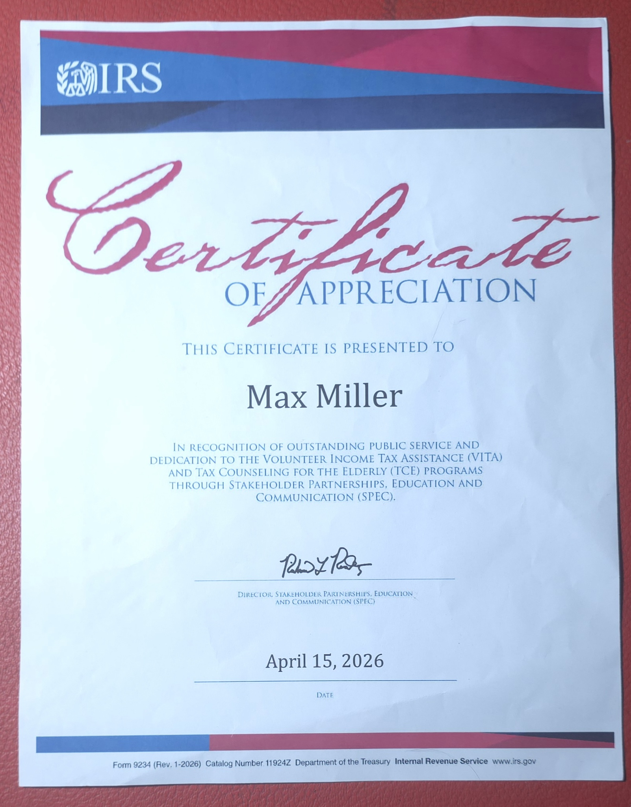
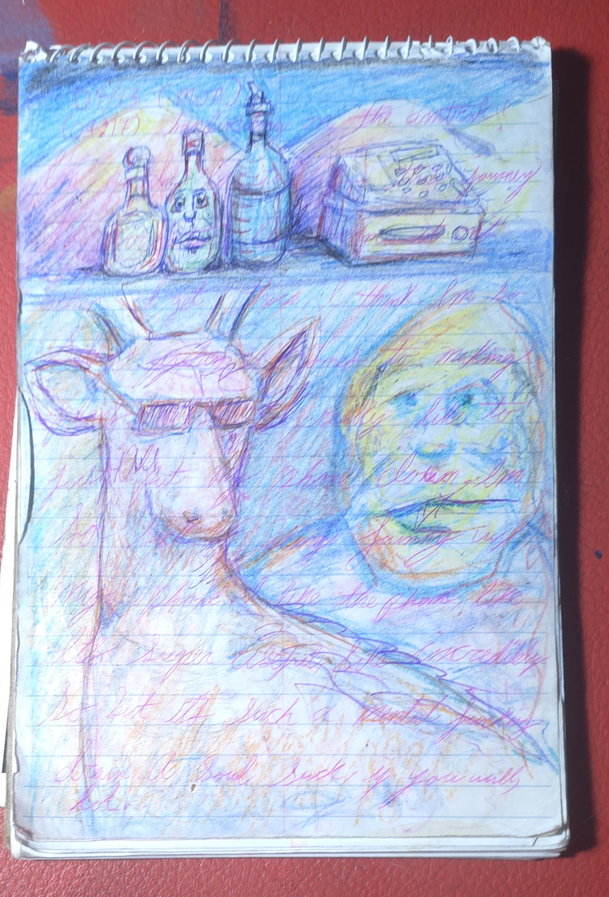
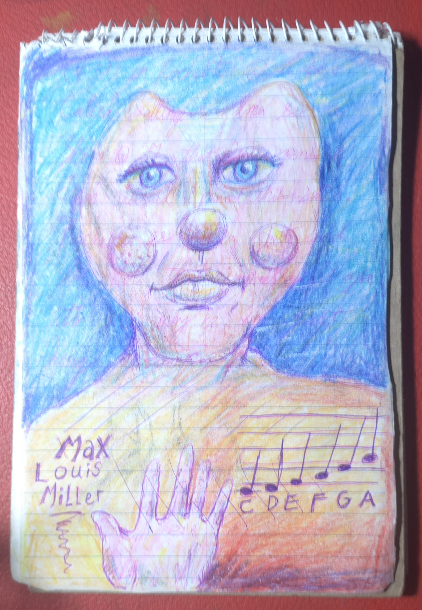
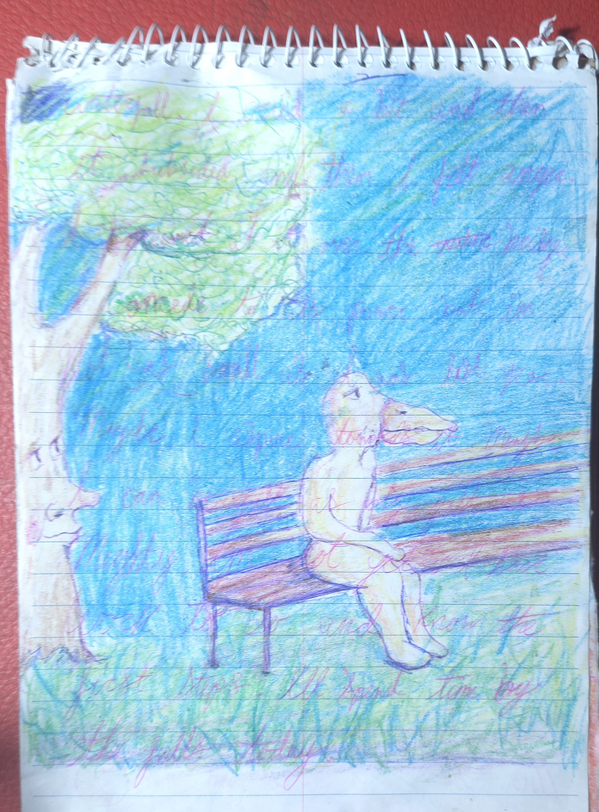
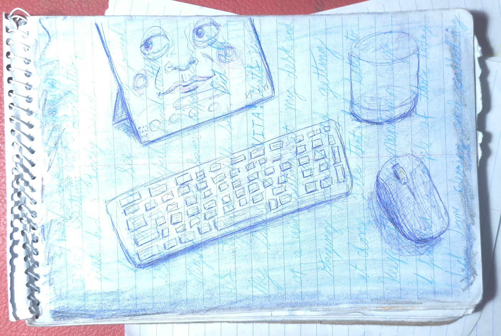
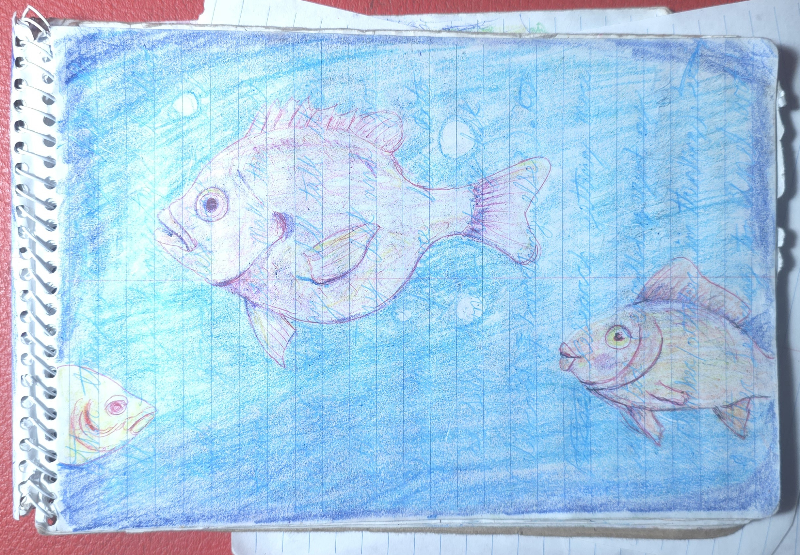
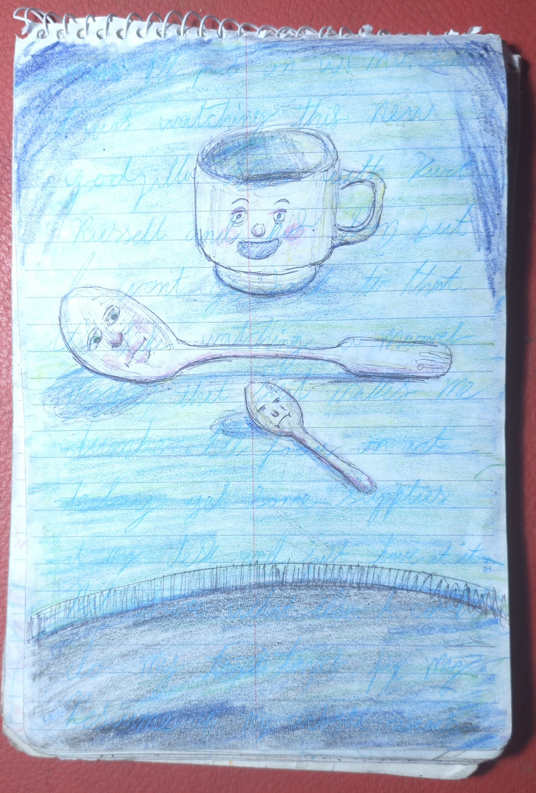
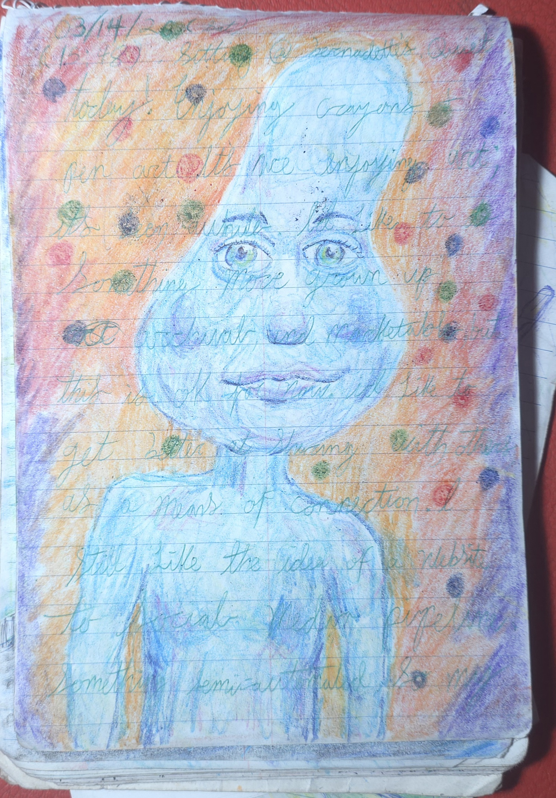

First Steps
The past several months for me have been about dismantling old structures and figuring out what to build next. Journaling has been a huge part of that. I had previously been typing, but discovered handwriting promoted clearer and less manic thinking.
I wanted to keep a physical record, but I didn't want my words exposed, so I decided to start transmuting them. I hadn’t made art in a long time, but these raw entries became the physical base layer for my return to it. The images atop my words are recovery; the words beneath them are process.
At the center is a certificate of appreciation addressed to me from the United States Internal Revenue Service. It stands in juxtaposition against crayon and Bic ink. Here, art and accounting represent the exact same thing for me: a first step back onto a path of competence, consistent execution, and measurable results.
The work continues. I sit for the first part of the Enrolled Agent exam next month, and my daily practice has graduated from crayon to watercolor and pastel. One step at a time, the path is becoming visible.







